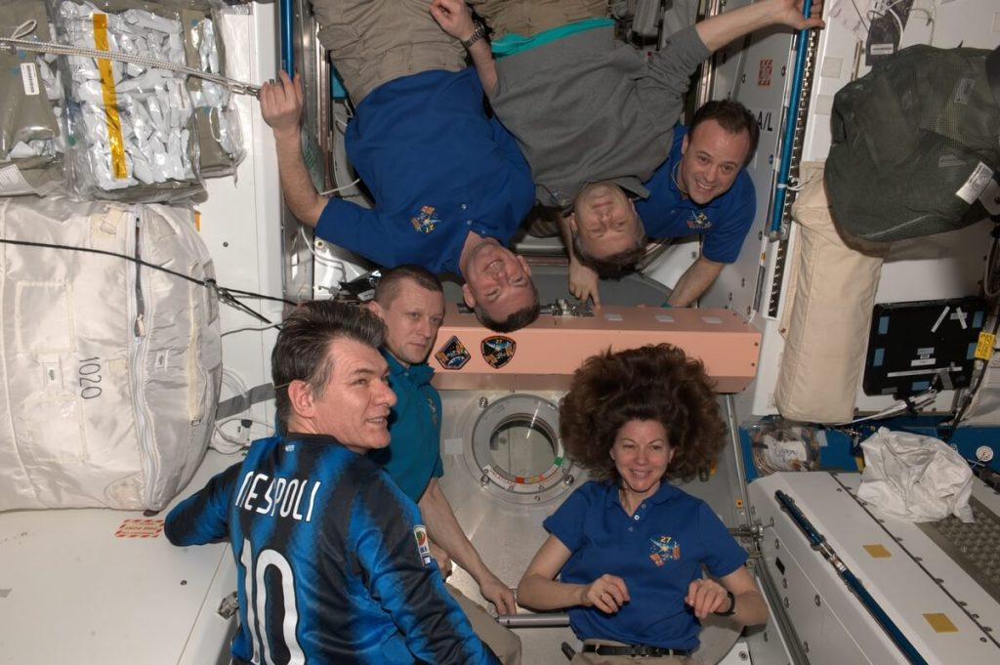

ဒီ အာကာသ စခန်းကြီးရဲ့ ရုရှားဖက် ခြမ်းက ပျံသန်းရေး ဆိုင်ရာ စနစ်တွေရဲ့ ၈၀% လောက်ဟာ သက်တမ်းလွန်နေပြီလို့ ရုရှား အစိုးရ အသံလွှင့် ဌာနနဲ့ တွေ့ဆုံခန်းမှာ သူက ပြောကြားလိုက်တာ ဖြစ်ပါတယ်။
နောက်ပြီး ရုရှား module တွေမှာ အက်ကြောင်း သေးသေး လေးတွေကိုလဲ ရှာဖွေ တွေ့ရှိ ထားတယ်လို့ ဆိုပါတယ်။ ဒီ အက်ကြောင်း လေးတွေဟာ အချိန်ကြာလာ တာနဲ့ အမျှ ပိုပြီး ဆိုးလာနိုင်တယ်လို့ သူက ဆိုပါတယ်။
ရုရှား အာကာသ အေဂျင်စီက အာကာသ စခန်းရဲ့ စက်ကိရိယာ တွေနဲ့ ပါတ်သက်ပြီး စိုးရိမ်မကင်း ဖြစ်နေခဲ့တာ ကြာခဲ့ပါပြီ။ နောက်ပြီး ၂၀၂၅ ခုနှစ် နောက်ပိုင်းမှာ ဒီ အပြည်ပြည် ဆိုင်ရာ အာကာသ စခန်းကို စွန့်ခွာကောင်း စွန့်ခွာနိုင်မယ် လို့လဲ ဆိုခဲ့ပါတယ်။
ဒီ အာကသ စခန်းကို ၁၉၉၈ ခုနှစ်က တည်ဆောက်ခဲ့တာ ဖြစ်ပါတယ်။ အဲ့သည် အချိန်က ဒီ အာကာသ စခန်းကို အမေရိကန် ပြည်ထောင်စု၊ ရုရှား၊ ကနေဒါ၊ ဂျပန် နဲ့ ဥရောပ နိုင်ငံတွေ ပူးပေါင်းပြီး စပ်တူ တည်ဆောက် ခဲ့တာပါ။ မူလက သူ့ရဲ့ သက်တမ်းကို ၁၅ နှစ်ပဲ သတ်မှတ်ထားခဲ့ တာ ဖြစ်ပါတယ်။
ဆိုလိုရော့ဗ်ဟာ ရုရှား အာကာသ စက်မှု လုပ်ငန်း ကုမ္ပဏီ တစ်ခုဖြစ်တဲ့ Energia ရဲ့ အင်ဂျင်နီယာချုပ် ဖြစ်ပါတယ်။ ဒီ ကုမ္ပဏီဟာ အာကာသ စခန်းရဲ့ ရုရှား အခြမ်းကို ဦးဆောင်ပြီး တာဝန်ယူ တည်ဆောက်ခဲ့တဲ့ ကုမ္ပဏီလဲ ဖြစ်ပါတယ်။ “ပြောရရင်တော့ ယာဉ်ပေါ်က ပျံသန်းရေး စနစ်တွေ လုံးဝ အားကုန် ပျက်စီး သွားတာနဲ့ ပြန်ပြင်လို့ မရမယ့် ပျက်စီးမှုတွေ စတင် ဖြစ်ပေါ်လာမှာ ဖြစ်ပါတယ်” လို့ ပြောပါတယ်။
ဆိုလိုရော့ဗ်ဟာ မနှစ်ကလဲ အာကာသ စခန်းယာဉ် ပေါ်က ကိရိယာ အများစုဟာ တဖြည်းဖြည်း အိုဟောင်းလာနေပြီး အမြန် အစားထိုးဖို့ လိုအပ်နေပြီ လို့ ပြောခဲ့ပါသေးတယ်။
နောက်ပြီး ရုရှားရဲ့ Zarya module ထဲမှာလဲ အက်ကြောင်းလေးတွေ တွေ့နေရပြီ လို့ ဆိုပါတယ်။ ဒီအက်ကြောင်းတွေက လောလောဆယ်တော့ ယာဉ်ရဲ့ မျက်နှာပြင်မှာပဲ ရှိပါသေးတယ်။ ဒီ Zarya Module ကို ၁၉၉၈ ခုနှစ်က လွှတ်တင်ခဲ့တာ ဖြစ်ပါတယ်။ ဒီ module ဟာ အပြည်ပြည်ဆိုင်ရာ အာကာသ စခန်းရဲ့ သက်တမ်း အအိုမင်းဆုံး အစိတ်အပိုင်း တစ်ရပ်လဲ ဖြစ်ပါတယ်။ လက်ရှိအချိန်မှာတော့ ဒီ အပိုင်းကို ကုန်လှောင်ရုံ အနေနဲ့ပဲ အသုံးချနေပါတယ်။
“ဒါဟာ အတော် ဆိုးတယ်ဗျ။ ဒီ အက်ကြောင်းတွေက တဖြည်းဖြည်း ကျယ်လာပြီး အခြားနေရာတွေ ကိုပါ ပြန့်လာမှာ” လို့ သူက ဆက်ပြောပါတယ်။
ပြီးခဲ့တဲ့ ဧပြီလ တုန်းကလဲ ရုရှား ဒုတိယ ဝန်ကြီးချုပ်က တီဗီ တွေ့ဆုံခန်း တစ်ခုမှာ “အာကာသ စခန်းပေါ်က သက်တမ်း ရင့်နေပြီ ဖြစ်တဲ့ သတ္တုတွေဟာ ပြန်ပြင်လို့ မရတဲ့ ပြဿနာတွေ ဖြစ်ပေါ်လာ စေနိုင်ပါတယ်။ ဒီ ပြဿနာက နေ ကြီးမားတဲ့ ဘေးအန္တရာယ် ဆိုးတွေ ဖြစ်လာနိုင်ပါတယ်။ ဒီအဖြစ်ဆိုးတွေ မကြုံရဖို့ ကျွန်တော်တို့ ကြိုးစားရပါမယ်” လို့ ပြောခဲ့ဖူးပါတယ်။
ပြီးခဲ့တဲ့ နှစ်ကလဲ ရုရှား အာကသ အေဂျင်စီ ရော့စ်ကော့စ်မော့စ် (Roscosmos) က အာကာသ စခန်းပေါ်က ဖွဲ့စည်းတည်ဆောက်ထားတဲ့ ပစ္စည်းတွေရဲ့ သက်တမ်းရင်းလာလို့ ဖြစ်လာတဲ့ ညောင်းညာမှု (structural fatigue) ကြောင့်မို့ ဒီ အာကာသ စခန်းကြီးဟာ ၂၀၃၀ ထက် ကျော်လွန်ပြီး ဆက်လက် တာဝန် ထမ်းဆောင်နိုင်မှာ မဟုတ်ဘူး လို့ ကြေငြာခဲ့ပါတယ်။
ဒီနှစ်ပိုင်း အတွင်းမှာ ရုရှား အာကာသ အေဂျင်စီဟာ ဘတ်ဂျက် ဖြတ်တောက်မှုတွေနဲ့ ကြုံတွေ့ခဲ့ ရပါတယ်။ ဒီကြားထဲ အကျင့်ပျက် ချစားတဲ့ ပြဿနာတွေကလဲ ပေါ်ထွက်လို့ လာပါသေးတယ်။ အပြည်ပြည် ဆိုင်ရာ အာကာသ စခန်းပေါ်က ရုရှား အပိုင်းကလဲ ပြဿနာ ပေါင်းစုံနဲ့ ကြုံတွေ့ခဲ့ရ ပါတယ်။
ပြီးခဲ့တဲ့ ဇူလိုင် လကလဲ ရုရှား ဓါတ်ခွဲခန်းယာဉ်က ဒုံးစက်တွေ မှားယွင်းပြီး နိုးလာတာကြောင့် အာကာသ စခန်းယာဉ် ကြီး တစ်ပါတ်လည် ကြွမ်းပြန် သွားခဲ့ရပါတယ်။

ဒီလို ပြဿနာတွေ တွေ့ကြုံနေရ ပေမယ့်လဲ ရုရှား အာကာသ အေဂျင်စီ ကတော့ ကြီးမားတဲ့ အနာဂတ် စီမံကိန်းကြီးတွေကို ထုတ်ဖော် ကြေငြာခဲ့ပါတယ်။ ဒီ စီမံကိန်းတွေ ထဲမှာ သောကြာဂြိုလ် ( Venus) ကို အာကာသယာဉ် စေလွှတ်မယ့် ခရီး၊ အာကာသထဲ ကို အသွားအပြန် ပျံသန်းနိုင်မယ့် လွန်းပျံယာဉ် စီမံကိန်းနဲ့ လပေါ်ကို စေလွှတ်မယ့် ခရီးစဉ် တွေ ပါဝင်ပါတယ်။
Reference: International Space Station facing irreparable failures, Russia warns | BBC